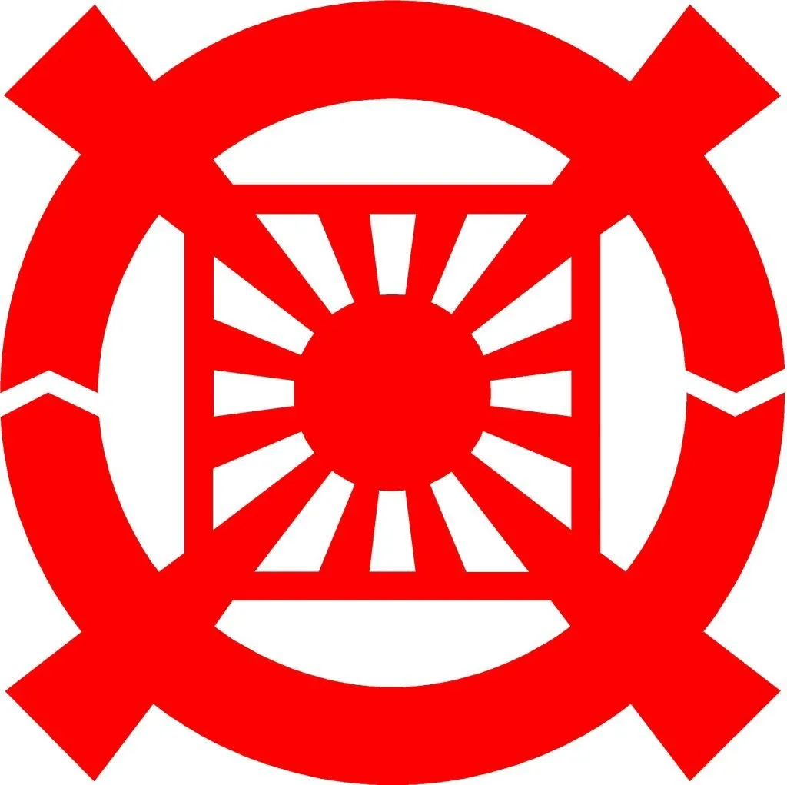

Home
"Religion is the belief in spiritual beings" - E.B. Tylor
"Religion is the opium of the people" - Karl Marx
Scripture | Beliefs/Morals | Inner Experiences | Structure/Organization
The religion Is centered on the teachings and scripture of Sun Myung Moon.
The church has specific practices and ceremonies.
The church has structure and organization.
The church adheres to central morals/beliefs which followers must obey and which are central to the community; things taken as truth

The official symbol of the Unification Church highlights a clear effort to organize Church dogma: The 12 inner lines represent the 12 gates to heaven, while the 4 larger arrows represent the 4 cardinal directions. The outer arrows represent yin and yang respectively. Shows the Unification Church not only has an organized group, but as a syncretized group as well.